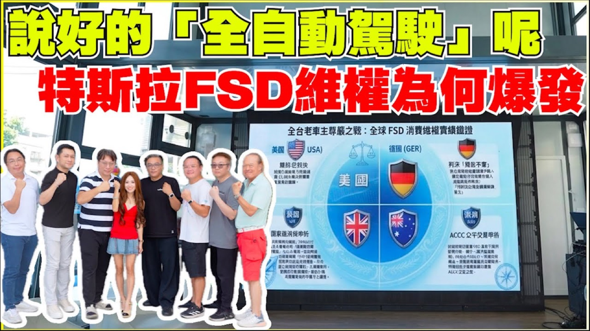

一張圖先看：爭議卡在哪裡

影片開頭先交代一件好消息：台灣 Tesla FSD 已向 VSCC 送件，若後續測試通過，車主終於可能用到更完整的輔助駕駛功能。緊接著，影片把視角轉到早期付費車主。這群人問的不只「能不能上線」，還包含一個更尖銳的問題：當年付費時被描述成 Full Self-Driving 的功能，今天若以 Level 2 監督版交付，算不算完成承諾。
影片中的四條主線
- 法規主線：台灣目前以 Level 2 架構送件最快，但 Level 2 屬於輔助駕駛，事故責任仍在駕駛。
- 消費主線：早期車主曾花十幾萬到二十幾萬元購買 FSD，等待多年後仍未取得當年想像的無人駕駛能力。
- 技術主線：HW3.0 與 HW4.0 的算力、鏡頭與車身架構不同，影片受訪者質疑 HW3.0 難以支援 L4 等級功能。
- 證據主線：車主關注 App 規格文字、線上合約版本、功能鎖定規則與國外集體訴訟案例，希望 Tesla 說明清楚。
條件：FSD 在台灣採 Level 2 送件
影片指出，台灣 Tesla 以 Level 2 架構送件。這個選擇在現實上有其效率：若直接要求 Level 3 或 Level 4，法規、責任歸屬與道路測試門檻都會更高，上線時間可能繼續往後拖。
問題在於，Level 2 的法律與產品語意都偏向「輔助」。駕駛需要監督系統，手與注意力仍要留在駕駛任務上；出事時，責任通常不會像 Level 3 以上那樣移到車廠。這與早期車主理解的「一路睡到目的地」形成落差。
受訪者把 Level 2 定位為輔助駕駛，並強調它和自動駕駛、無人駕駛在責任分配上不同。 — 影片約 03:49–03:56，摘要式引用
機制：承諾、付款與交付內容分開了
影片中的車主主張，早年購買 FSD 時，核心吸引力來自「全自動駕駛」與 Robotaxi 願景。多年後實際開放 FSD Supervised，系統仍要求人類監督，車主便會認為交付內容低於付費時的期待。
| 爭議面向 | 車主在意的點 | 需要補強的證據 |
|---|---|---|
| 名稱 | Full Self-Driving 被理解為全自動駕駛 | 購買頁、發票、App 規格與當時官網截圖 |
| 時間 | 部分車主等待五到八年 | 訂單日期、功能開放紀錄、官方公告 |
| 責任 | Level 2 仍由駕駛監督 | 台灣送件文件、使用條款、VSCC 或主管機關說明 |
| 硬體 | HW3.0 能否支援未來 L4 | Tesla 官方技術說明、維修升級方案、實測資料 |
結果：維權訴求集中在退費、說明與責任
影片提到，曾有 240 位車主透過表單表達加入維權運動的意願；後續若要讓政府機關介入，實名陳情的數量與資料完整度就變得重要。受訪者提到約 45 份實名陳情，並表示已把部分證據送交相關單位。
- 要求原廠說明：當年 FSD 承諾與現行 FSD Supervised 的差異。
- 要求釐清合約：車主能否查到購買當時的完整版本，而非只看到新版線上條款。
- 要求處理 HW3.0：若硬體難以支援未來完整能力，Tesla 應說明升級或補償方案。
- 要求退費或賠償：若承諾無法實現，車主主張應依法退費，並討論懲罰性賠償的可能。
受訪者要求企業自清：既然功能已銷售給車主，原廠應說明交付內容與責任邊界。 — 影片約 09:27–09:36，ASR 需回看校對
技術爭點：HW3.0 與 HW4.0 的差異
影片後段請受訪者說明 HW3.0 與 HW4.0。主張大意是：新舊硬體差異不只在晶片算力，也包含鏡頭畫素、車身控制架構與未來雷達支援。若要把 HW4.0 主機直接裝到 HW3.0 車上，可能牽涉車內控制器與訊號架構重做。
可驗證清單：讀者應該查什麼
- 查購買文件：早期 FSD 在訂單、發票、App 規格中到底寫「全自動駕駛」或「全自動輔助駕駛」。
- 查版本記錄：線上合約是否能調出購買當時版本，App 顯示文字是否有時間戳。
- 查主管機關：台灣 FSD 送件適用的 Level 2 條件、測試範圍與駕駛責任說明。
- 查國外案例：澳洲、歐洲、美國相關集體訴訟或退款案例的實際案號、判決與和解條件。
- 查技術文件：HW3.0 到 HW4.0 是否有官方升級路徑，以及 V14 Lite 或量化方案對安全邊界的限制。
如果你是車主，第一步建議先保存資料：購車合約、付款證明、App 規格截圖、更新前後畫面、服務中心對話紀錄。沒有時間戳的說法，很難轉成有效證據。
一句話讀完
這支影片真正有價值的地方，是把 FSD 爭議從「科技功能何時來」拉回「車主付費時買到什麼承諾」。台灣若以 Level 2 監督版先上線，功能也許會前進，但早期車主的合約、硬體與責任問題仍會留下。